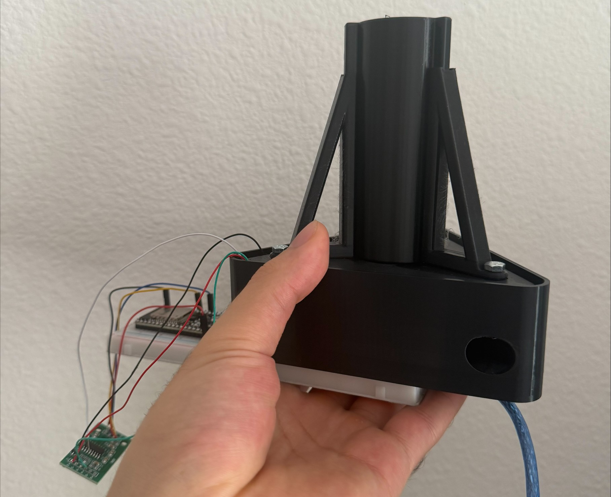

Javier A. Cuevas Chabrier
Mechanical Engineering & Computer Science Student @ the University of Central Florida
Projects & Organizations
Knights Experimental Rocketry - Propulsion Director
- Applied rocketry principles: heat transfer, bolt stress, thrust, and impulse.
- Managed master assembly for odysseus propulsion system.
- Built and tested propulsion chamber through static fires.
- Created preliminary payload frame design inspired by NASA's 3U CubeSat using McMaster resources.
- Working towards L1 certification.
Knights Racing BAJA SAE
- Contributed to overall Baja SAE car design (2024-2025).
- Designed suspension spacers, tabs, maintenance stand, and suspension tabs.
- Conducted FEA analysis to determine material suitability and strength.
Society of Hispanic Professional Engineers
- Projects Committee - Payloads Team: Designed preliminary payload frame for SHPE x KXR collaboration.
- Professional Development - ResearchSHPE Co-Director: Coordinated events to help students learn about research opportunities.
- Outreach Committee - Volunteer Director: Organized collaboration events and volunteering opportunities.


Solid Propellant Motor Project
- Working towards the research and development of solid propellant motors.
- Implementing different measurement techniques, such as the use of a strain gauge to measure thrust performance, to gather data on solid motor properties.
- Coded in C++ to design scripts that read strain gauge sensor values from testing.
- Casting propellants of different compositions using sugar, potasium nitrate, and metal oxides.
- Evaluating propellant performance across varying fuel blend ratios to quantify mixture-ratio effects on key combustion and system metrics.
- Developed several iterations of a test stand to incooporate an hx711 integrated load scale for gathering thrust data.


In the above video, I ignited the propellant. This was an early test — new tests are underway with the updated scale shown above.
Digital Advertising AI
- Built software that interprets market trends and ad performance using Python Tkinter and Google's Gemma AI model.
- Designed the project as a practical tool for turning campaign data into clearer advertising decisions.
Electric Generator
- Building a generator using electromagnetic induction and 3D printed parts.
- Working toward implementation on an electric bicycle.
Robotic Arm
- Designing a remote-controlled robotic arm with an Arduino Uno R3 microcontroller.
- Working toward implementing a Raspberry Pi controller for expanded capability.
Physics Calculator
- Created a multi-purpose calculator demonstrating physics concepts and calculus processes.
- Structured the project around making equations, inputs, and outputs easier to understand.
Data Visualization
- Built a Python executable that generates scatter plots from Excel data.
- Focused on turning spreadsheet data into quick visual summaries.
C Programs
- Created a quadratic function calculator, dominoes game simulator, and business manager.
- Used the projects to practice procedural programming, data handling, and console-based interaction.
Discord AI Bot
- Developed an AI chat bot within Discord that helps monitor servers and assist students with time-consuming tasks.
- Designed the bot to solve complex engineering problems through code-assisted responses.